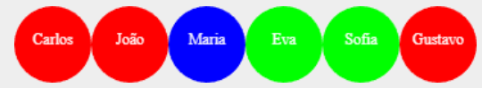

Aula 22 – Recursão Mútua e Árvores N-árias
Universidade Federal do Rio Grande do Sul
Instituto de Informática
Departamento de Informática Teórica
Slides baseados no material da Profa. Leila Ribeiro.
Como representar esta informação?
Note que a estrutura Pessoa tem autorreferência:
Dada uma pessoa p:
data Pessoa:
| ninguem # caso base: pai/mãe desconhecido(a)
| pessoa(
nome :: String, # nome da pessoa
ano :: Number, # ano de nascimento
tipo-sang :: String, # tipo sanguíneo
pai :: Pessoa, # representa o pai da pessoa
mae :: Pessoa # representa a mãe da pessoa
)
end
CARLOS = pessoa("Carlos", 1926, "A", ninguem, ninguem)
BETINA = pessoa("Betina", 1927, "B", ninguem, ninguem)
EVA = pessoa("Eva", 1960, "O", CARLOS, BETINA)
FRED = pessoa("Fred", 1958, "A", ninguem, ninguem)
GUSTAVO = pessoa("Gustavo", 1988, "A", FRED, EVA)fun ancestral-tipo-o(p :: Pessoa) -> Boolean:
doc: "Dada uma pessoa, verifica se esta pessoa ou algum ancestral tem tipo sanguíneo O."
cases (Pessoa) p:
# Se p é ninguém, retorna falso
| ninguem => false
| pessoa(nome, ano, tipo, pai, mae) =>
(tipo == "O") or # Se p é tipo O
ancestral-tipo-o(pai) or # ou existe ancestral por parte de pai tipo O
ancestral-tipo-o(mae) # ou existe ancestral por parte de mãe tipo O
end
where:
ancestral-tipo-o(GUSTAVO) is true
ancestral-tipo-o(FRED) is false
endDados
P. Como construir uma árvore com os descendentes de uma pessoa?
Como representar esta informação?
Dados
Dada uma pessoa p:
fun descendente-tipo-o(p :: Pessoa) -> Boolean:
doc: "Dada uma pessoa, verifica se ela ou algum de seus descendentes tem tipo sanguíneo O."
ask:
# Se p tem tipo O, devolver true
| p.tipo-sang == "O" then: true
# Senão,
| otherwise:
# Existe alguém com tipo O entre
???
p.filhos # os filhos de p?
end
where:
descendente-tipo-o(CARLOS) is true
descendente-tipo-o(JOAO) is false
endO que colocar aqui?
↘ tipo ListaDeFilhos
fun descendente-tipo-o(p :: Pessoa) -> Boolean:
doc: "Dada uma pessoa, verifica se ela ou algum de seus descendentes tem tipo sanguíneo O."
ask:
# Se p tem tipo O, devolver true
| p.tipo-sang == "O" then: true
# Senão,
| otherwise:
# Existe alguém com tipo O entre os filhos de p?
descendente-tipo-o-lista(p.filhos)
end
where:
descendente-tipo-o(CARLOS) is true
descendente-tipo-o(JOAO) is false
endDada uma lista lf:
fun descendente-tipo-o-lista(lf :: ListaDeFilhos) -> Boolean:
doc: "Dada uma lista de filhos, verifica se algum deles ou seus descendentes tem tipo sanguíneo O."
cases (ListaDeFilhos) lf:
# Se a lista de filhos é vazia, devolver false
| empty => false
| link(f, r) =>
# Existe um descendente com tipo O entre:
# 1) o primeiro filho e seus filhos?, ou
# 2) entre o resto dos filhos?
??? (f) or
??? (r)
end
where:
descendente-tipo-o-lista(empty) is false
descendente-tipo-o-lista(LF-CARLOS) is true
descendente-tipo-o-lista(LF-EVA) is true
endPessoa
ListaDeFilhos
type ListaDeFilhos = List<Pessoa>
data Pessoa:
| pessoa(
nome :: String, # Nome da pessoa
ano :: Number, # Ano de nascimento da pessoa
tipo-sang :: String, # Tipo sanguíneo da pessoa
filhos :: ListaDeFilhos # Filhos da pessoa
)
end
JOAO = pessoa("João", 1952, "A", empty)
MARIA = pessoa("Maria", 1955, "B", empty)
SOFIA = pessoa("Sofia", 1986, "O", empty)
GUSTAVO = pessoa("Gustavo", 1988, "A", empty)
LF-EVA = [list: SOFIA, GUSTAVO]
EVA = pessoa("Eva", 1960, "O", LF-EVA)
LF-CARLOS = [list: JOAO, MARIA, EVA]
CARLOS = pessoa("Carlos", 1926, "A", LF-CARLOS)
fun descendente-tipo-o(p :: Pessoa) -> Boolean:
doc: "Dada uma pessoa, verifica se ela ou algum de seus descendentes tem tipo sanguíneo O."
ask:
| p.tipo-sang == "O" then: true
| otherwise: descendente-tipo-o-lista(p.filhos)
end
where:
descendente-tipo-o(CARLOS) is true
descendente-tipo-o(JOAO) is false
endfun descendente-tipo-o-lista(lf :: ListaDeFilhos) -> Boolean:
doc: "Dada uma lista de filhos, verifica se algum deles ou seus descendentes tem tipo sanguíneo O."
cases (ListaDeFilhos) lf:
# Se a lista de filhos é vazia, devolver false
| empty => false
| link(f, r) =>
# Existe um descendente com tipo O entre:
# 1) o primeiro filho e seus filhos?, ou
# 2) entre o resto dos filhos?
descendente-tipo-o(f) or
descendente-tipo-o-lista(r)
end
where:
descendente-tipo-o-lista(empty) is false
descendente-tipo-o-lista(LF-CARLOS) is true
descendente-tipo-o-lista(LF-EVA) is true
endFunção
Note a relação entre as definições de dados e as funções que tratam esses dados
Objetivo: Construir uma função que, dados …, faz …
Passo 1: Definir nome da função:
Passo 2: Definir tipos de entradas e saída:
Passo 3: Definir como a função gera o resultado …
Dado(s) ...

?